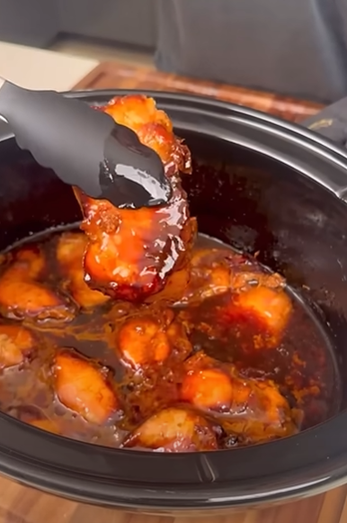

Home
Teriyaki Chicken

A slow and easy to cook honey teriyaki chicken in slow cookpot that can be shredded, 4-5 hour cooking time.
Ingredients
- 48oz boneless skinless chicken thighs
- 5 tablespoons soy sauce (75g)
- 2 tablespoons dark soy sauce (30g)
- 4 tablespoons honey (80g)
- 4 tablespoons mirin (60g)
- 2 tablespoon minced ginger
- 1 tablespoon minced garlic
- 3 tablespoons cornstarch (24g) mixed with 4 tablespoons (60ml) cold water
- Throw everything into the point and then mix the conrstarch with cold water slurry until completely mixed.
- High: 4-5 hours OR Low: 5+ on low setting for the pot